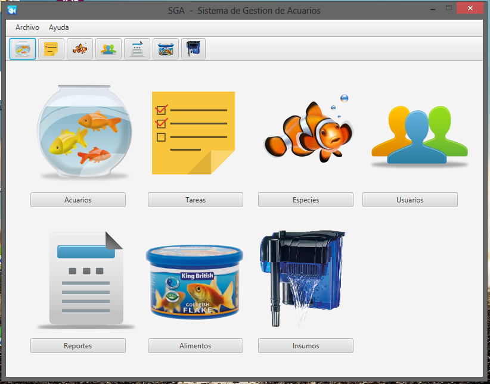

Usted podrá solicitar al sistema 3 tipos de informes ingresando desde la pantalla principal a la seccion REPORTES (cuyo icono son formularios)

Los tipos de reportes:
- Informe de Acuarios en el sistema: El sistema generará un informe con los acuarios actuales en el sistema y toda su información asociada.
- Informe de Especies: El sistema generará un informe con las especies en el sistema y toda la información asociada.
- Informe de Alimentos e Insumos: El sistema generará un informe de los alimentos, o insumos cargados en el sistema y se podrá observar toda su informacion adicional.
- Informe de Tareas del Sistema: El sistema generará un informe de las tareas realizadas, listando toda su información solicitada.
Created with the Personal Edition of HelpNDoc: Free CHM Help documentation generator